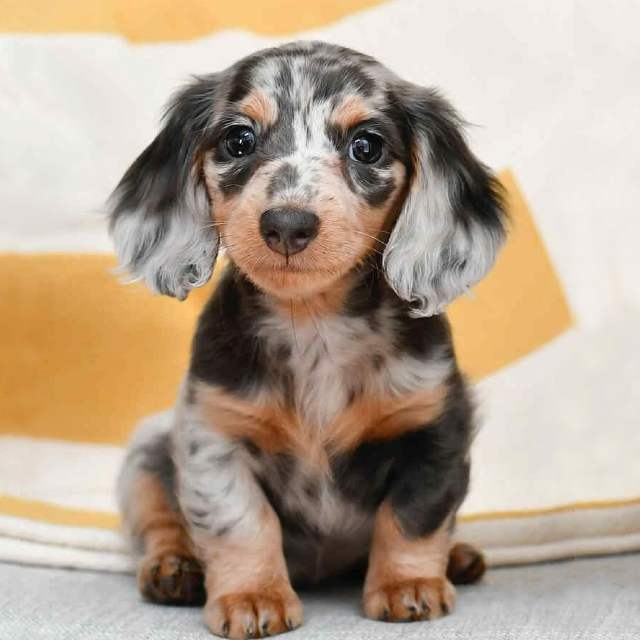

RAZAS DE PERROS QUE ME GUSTARÍA TENER
GOLDEN DOODLE

MINI DASCHUND PELUDO

Si quieres ver más imágenes de perritos, da clic aquí
LISTAS DE PERRITOS
3 cosas que los perritos aman:
- Comer
- Jugar
- Pasear
3 cosas que los perritos odian:
- Gatos
- Tener hambre
- Estar solos